The Lorenz IP: wizard skeleton and source
Created with the AXI4 peripheral wizard, then filled in: a single-step Euler solver behind an AXI-Lite register file, 27-bit signed fixed point.
03.1Create the IP with the AXI4 peripheral wizard, then open it for editing
- Vivado: Tools → Create and Package New IP…, choose Create a new AXI4 peripheral (it generates the AXI4 IP, a driver, a software test application and a demo design).
- Add Interfaces: one interface
S00_AXI, type Lite, mode Slave, data width 32, Number of Registers = 7 (allowed 4-512; the capture shows the field at its minimum, 4). Name the IP (the capture shows the defaultmyip; mine islorenz_dda_driver) and put it under the project'sip_repo. - On the wizard's last page (Create Peripheral, Peripheral Generation Summary), leave Edit IP selected and click Finish.
- Vivado opens a new, separate Vivado project for the IP, for example
edit_myip_v1_0— call this the first editor window (the next step covers why it looks empty).
The wizard produces a working AXI4-Lite slave with correct handshakes, so only the register map and the solver need custom code. The register count in the wizard only sizes the template: 7 registers gave a 5-bit address bus, but my final map (12 words, 7-bit address bus) comes from editing the Verilog, which is why the instance later had to be upgraded from that first revision (Rev 1). Edit IP is supposed to take you straight to the IP's sources, but in practice it opens a project shell first — from here: add the numeric core sources, add ports to the slave file, replace the wizard's register block with my 12-register map, and Re-Package IP (next steps).
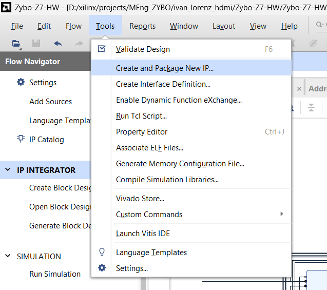
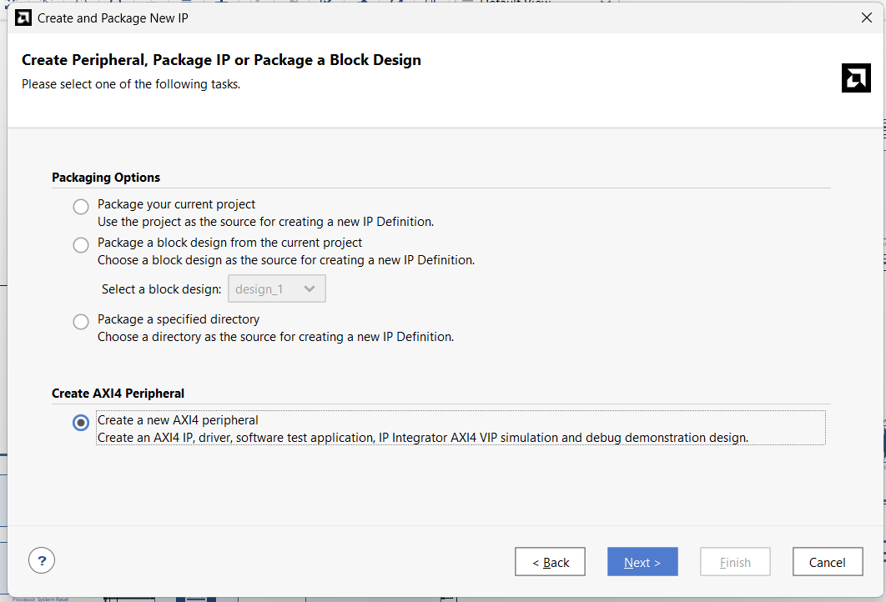
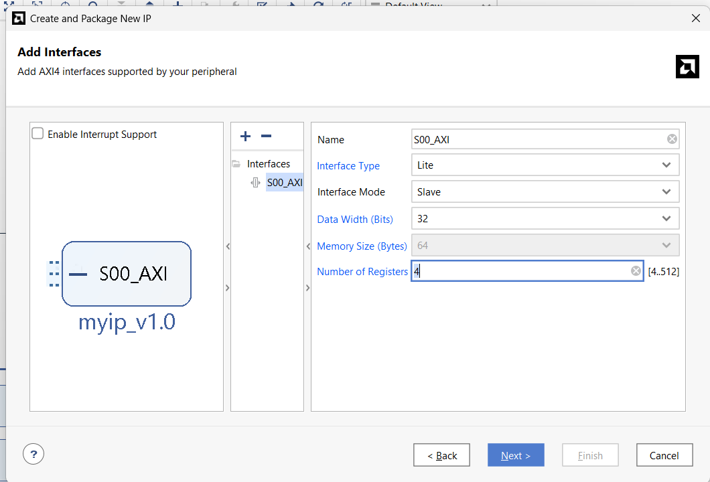
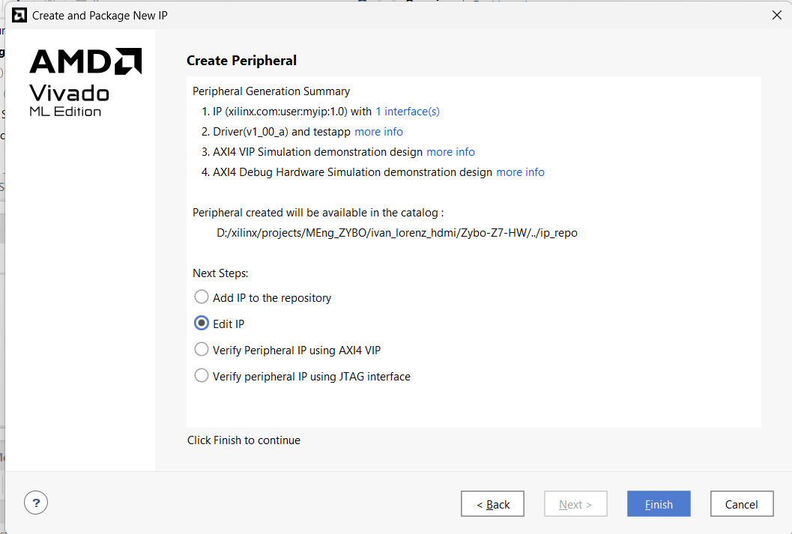
03.2The first editor window has no sources — register the IP folder, then edit it in a second window
- The first editor window's Sources panel is empty (Design Sources (0)) even though the IP was just created. That project's own IP repository list doesn't include the folder the new IP lives in (the one chosen when the IP was created), so it can't see the new IP's HDL as one of its sources.
- Fix: in that window, Tools → Settings → IP → Repository.
- Click +, browse to and select the IP's folder (here
ip_repo/myip_1_0), click Select, then OK. Vivado confirms "1 repository was added to the project" and lists the IP found inside it. - Back in the same window, open IP Catalog and search for the IP's name. It now appears under User Repository → AXI Peripheral — this confirms the repository add worked.
- Right-click the IP in the catalog and choose Edit in IP Packager. This opens a second, separate Vivado project (for example
myip_v1_0_project) — this one is wired to the real files. - In this second editor window, Sources lists the IP's actual Design Sources (its
.vfiles), and a Package IP tab walks through Identification → … → Review and Package, ending in a Re-Package IP button to write any edits back into the packaged IP.
The first window and the second window both look like an ordinary Vivado project, which makes it easy to assume the first one is already "the IP project" and start editing sources that aren't there, or that don't feed back into the package. Registering the IP's folder as a repository and picking Edit in IP Packager from the catalog is what actually opens a project pointed at the packaged source.
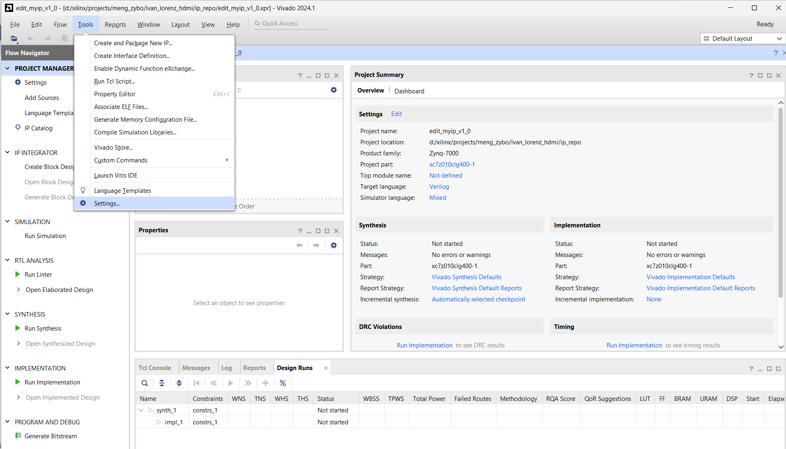
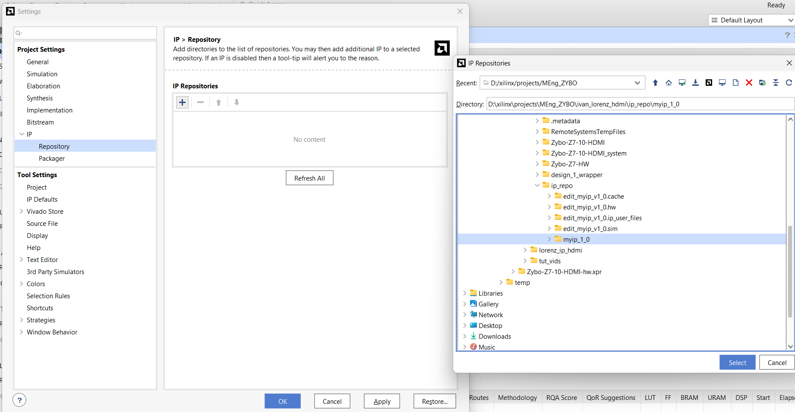
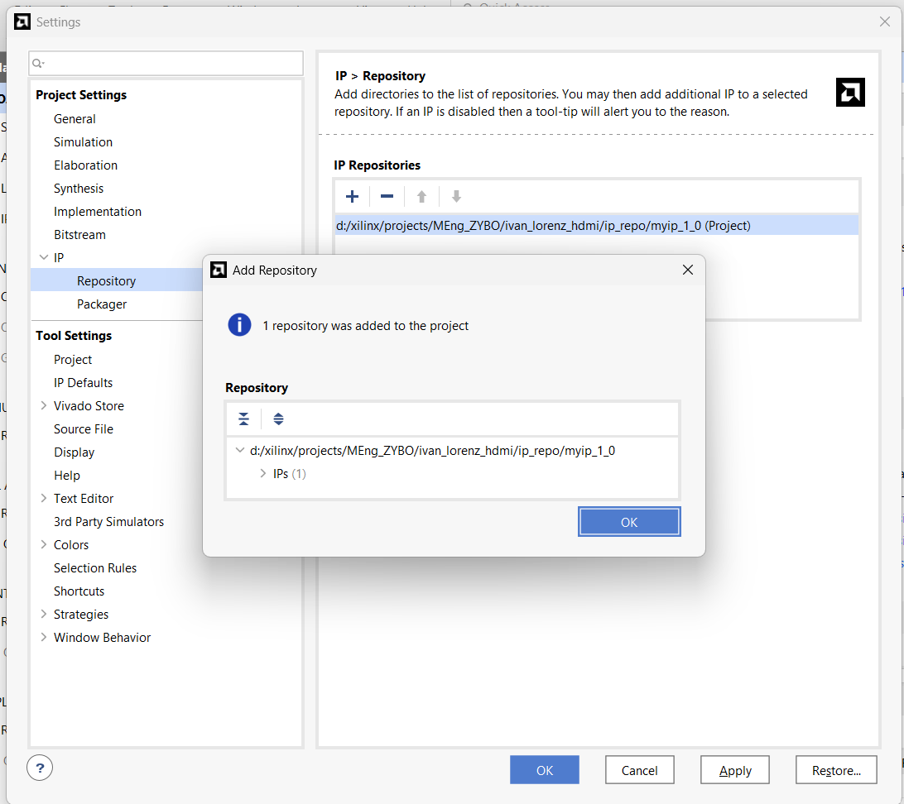
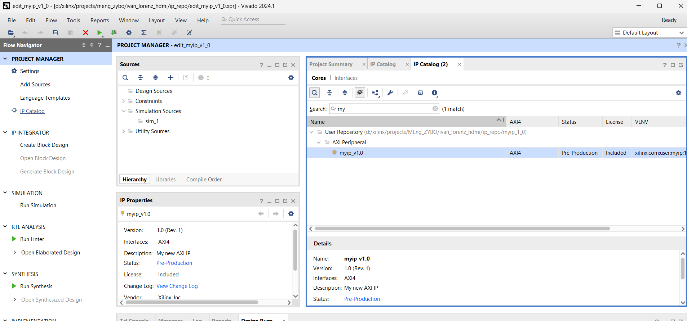
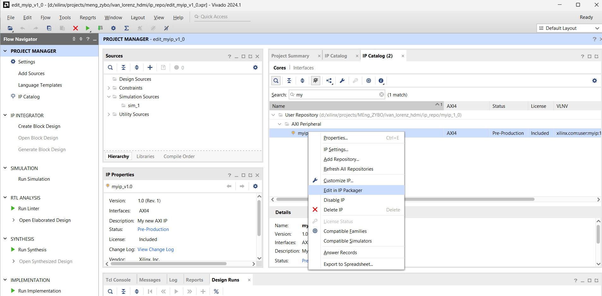
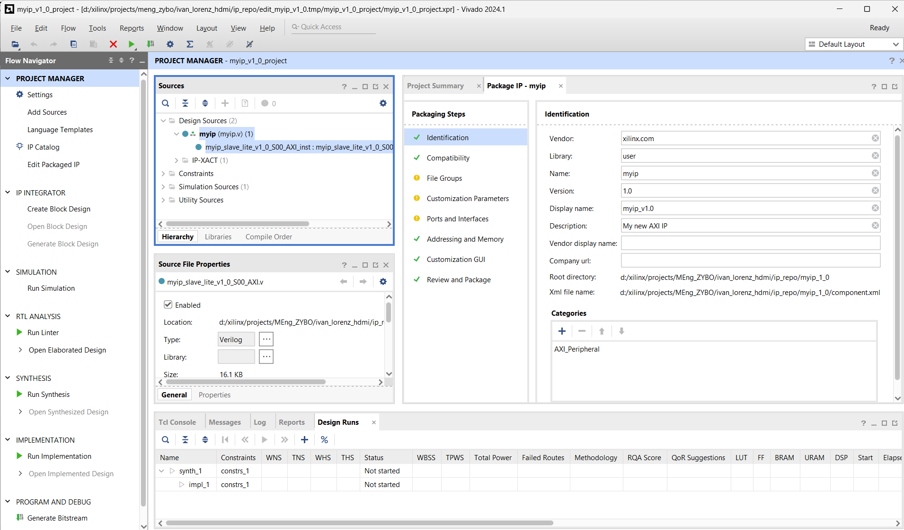
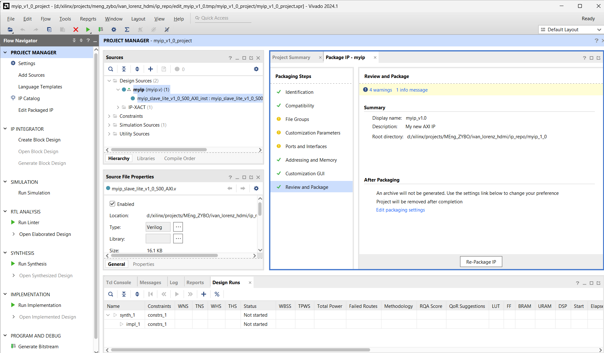
This is a general Vivado quirk, not specific to the Lorenz IP — it applies the same way any time an existing packaged IP is reopened for editing.
03.3IP source layout
- IP lives in
ivan_lorenz_hdmi/Zybo-Z7-HW/ip_repo/lorenz_dda_driver_1_0:component.xml(core revision 3),hdl/(top + AXI-Lite slave),src/(numeric core),drivers/(BSP driver stub),xgui/,bd/. - Numeric core (
src/):signed_mult.v,integrator.v,lorenz_solver.v. Bus side (hdl/):lorenz_dda_driver.v,lorenz_dda_driver_slave_lite_v1_0_S00_AXI.v. - AXI-Lite address width is 7 bits (
OPT_MEM_ADDR_BITS = 4+ADDR_LSB = 2) = 32 word slots; 12 are used.
Solver logic is kept free of bus code; the slave file only maps registers to the solver's ports.
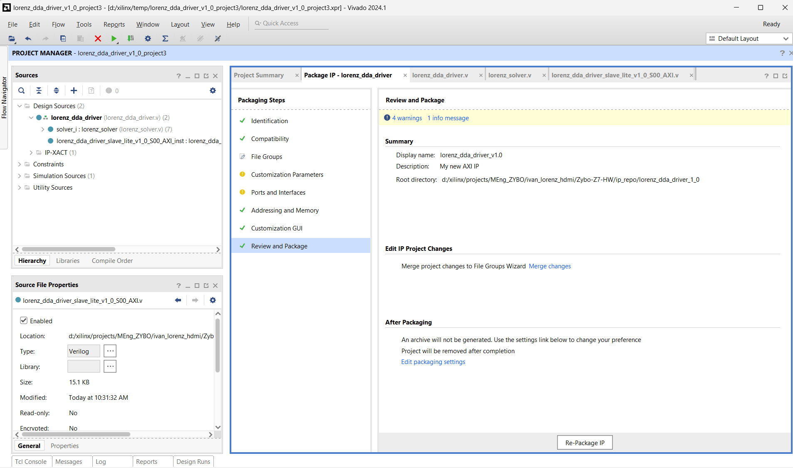
03.4Fixed-point multiplier
- 27-bit signed operands; full 54-bit product; keep
{sign, bits[45:20]}→ result has 20 fractional bits again.
All state and parameters use the same format: 1 sign + 6 integer + 20 fractional bits (written Q6.20). Value = raw / 220, range about ±64.
`timescale 1ns / 1ps
module signed_mult
(
output signed [26:0] out,
input signed [26:0] a,
input signed [26:0] b
);
wire signed [53:0] mult_out;
assign mult_out = a * b;
assign out = {mult_out[53], mult_out[45:20]};
endmodule03.5Integrator with software load
- One register per variable:
v ← v + functon a step pulse; reloadsInitialOutwhenreset | load.
Reloading only on reset left the solver at (0,0,0) forever (the init registers are zero during reset). load lets software reload without a global reset.
`timescale 1ns / 1ps
module integrator
(
input clk,
input reset,
input load, // reload InitialOut without a global reset (software controlled)
input enable, // pulse high for one cycle to take a single integration step
input signed [26:0] funct, //the dV/dt function
input signed [26:0] InitialOut, //the initial state variable V
output signed [26:0] out //the state variable V
);
reg signed [26:0] v1 ;
wire signed [26:0] v1new ;
wire signed [26:0] adder_out;
always @(posedge clk) begin
v1 <= v1new;
end
assign adder_out = v1 + funct; // Adder
assign v1new = (reset | load) ? InitialOut : (enable ? adder_out : v1);
assign out = v1; // Assign output
endmodule03.6Solver: one Euler step per rising edge
step = enable & ~enable_d— software must write CTRL bit 0 as 1 then 0 for every step.dtis used as a right-shift (step size 2−dt), not as a fixed-point value.- dx = σ(y−x); dy = x(ρ−z) − y; dz = xy − βz, each scaled by the shift;
donepulses one clock after a step.
Shifts instead of multiplying by dt saves DSPs; the PS sets pace by how often it steps.
`timescale 1ns / 1ps
module lorenz_solver
(
input clk,
input reset,
input enable,
input load,
output reg done,
input signed [26:0] x_init,
input signed [26:0] y_init,
input signed [26:0] z_init,
input signed [26:0] sig,
input signed [26:0] rho,
input signed [26:0] beta,
input signed [26:0] dt,
output signed [26:0] x_next,
output signed [26:0] y_next,
output signed [26:0] z_next
);
wire signed [26:0] funct_x, funct_y, funct_z;
wire signed [26:0] mult_xrhoz, mult_xy, mult_bz;
reg enable_d;
wire step = enable & ~enable_d;
always @(posedge clk) begin
if (reset) begin
enable_d <= 1'b0;
done <= 1'b0;
end else begin
enable_d <= enable;
done <= step;
end
end
// x' = sigma * (y - x), scaled by dt
signed_mult mult_dx (
.out(funct_x),
.a (sig),
.b ((y_next - x_next) >>> dt)
);
integrator integrator_x (
.clk(clk), .reset(reset), .load(load), .enable(step),
.InitialOut(x_init), .funct(funct_x), .out(x_next)
);
// y' = x * (rho - z) - y, scaled by dt
signed_mult mult_xrhoz_i (
.out(mult_xrhoz),
.a (x_next >>> dt),
.b (rho - z_next)
);
assign funct_y = mult_xrhoz - (y_next >>> dt);
integrator integrator_y (
.clk(clk), .reset(reset), .load(load), .enable(step),
.InitialOut(y_init), .funct(funct_y), .out(y_next)
);
// z' = x * y - beta * z, scaled by dt
signed_mult mult_xy_i (
.out(mult_xy),
.a (x_next >>> dt),
.b (y_next)
);
signed_mult mult_bz_i (
.out(mult_bz),
.a (z_next >>> dt),
.b (beta)
);
assign funct_z = mult_xy - mult_bz;
integrator integrator_z (
.clk(clk), .reset(reset), .load(load), .enable(step),
.InitialOut(z_init), .funct(funct_z), .out(z_next)
);
endmodule03.7AXI-Lite register file
- 12 words at offsets 0x00-0x2C: CTRL, STATUS, X/Y/Z init, σ, ρ, β, DT (writable), X/Y/Z next (read-only).
- CTRL bit 0 = enable (step on 0→1), bit 1 = load (level). STATUS bit 0 = done (one-clock pulse).
- Results are sign-extended to 32 bits on read. All writable registers reset to 0 — software must write parameters before use.
One flat register set is the whole interface, so the PS driver stays a page of Xil_Out32/Xil_In32.
localparam integer REG_CTRL = 0; // R/W bit0 = enable (0->1 edge = one step), bit1 = load init values
localparam integer REG_STATUS = 1; // R bit0 = done
localparam integer REG_XINIT = 2; // R/W signed[26:0]
localparam integer REG_YINIT = 3; // R/W signed[26:0]
localparam integer REG_ZINIT = 4; // R/W signed[26:0]
localparam integer REG_SIGMA = 5; // R/W signed[26:0]
localparam integer REG_RHO = 6; // R/W signed[26:0]
localparam integer REG_BETA = 7; // R/W signed[26:0]
localparam integer REG_DT = 8; // R/W signed[26:0]
localparam integer REG_XNEXT = 9; // R signed[26:0]
localparam integer REG_YNEXT = 10; // R signed[26:0]
localparam integer REG_ZNEXT = 11; // R signed[26:0]
...
// Drive the solver's parameter/enable inputs straight from the register file
assign enable = slv_reg_ctrl[0];
assign load = slv_reg_ctrl[1];
assign x_init = slv_reg_x_init;
assign y_init = slv_reg_y_init;
assign z_init = slv_reg_z_init;
assign sigma = slv_reg_sigma;
assign rho = slv_reg_rho;
assign beta = slv_reg_beta;
assign dt = slv_reg_dt; wire [OPT_MEM_ADDR_BITS:0] reg_raddr = axi_araddr[ADDR_LSB+OPT_MEM_ADDR_BITS:ADDR_LSB];
assign S_AXI_RDATA = (reg_raddr == REG_CTRL) ? slv_reg_ctrl :
(reg_raddr == REG_STATUS) ? {31'b0, done_reg} :
(reg_raddr == REG_XINIT) ? {{5{slv_reg_x_init[26]}}, slv_reg_x_init} :
(reg_raddr == REG_YINIT) ? {{5{slv_reg_y_init[26]}}, slv_reg_y_init} :
(reg_raddr == REG_ZINIT) ? {{5{slv_reg_z_init[26]}}, slv_reg_z_init} :
(reg_raddr == REG_SIGMA) ? {{5{slv_reg_sigma[26]}}, slv_reg_sigma} :
(reg_raddr == REG_RHO) ? {{5{slv_reg_rho[26]}}, slv_reg_rho} :
(reg_raddr == REG_BETA) ? {{5{slv_reg_beta[26]}}, slv_reg_beta} :
(reg_raddr == REG_DT) ? {{5{slv_reg_dt[26]}}, slv_reg_dt} :
(reg_raddr == REG_XNEXT) ? {{5{x_reg[26]}}, x_reg} :
(reg_raddr == REG_YNEXT) ? {{5{y_reg[26]}}, y_reg} :
(reg_raddr == REG_ZNEXT) ? {{5{z_reg[26]}}, z_reg} :
32'b0;← 02 Fresh Digilent baseline · 04 Block design →
docs-site/figures/ (see its README).